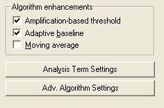
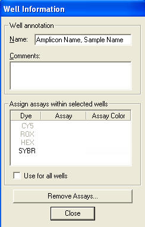
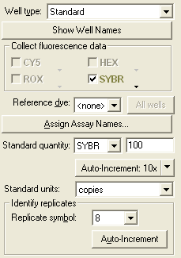
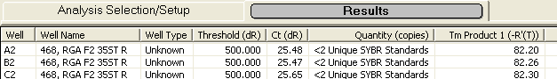
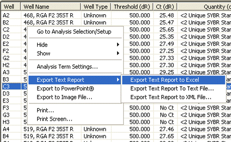
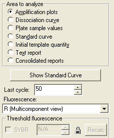
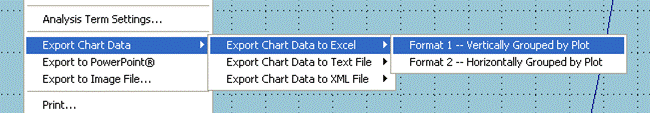

Set up the well names and designate the calibration
reactions
The first step is to use the well labels to provide the
amplicon and sample name, using a comma to separate them:

The amplicon name must be first and the amplicon name must be identical to that entered in to the amplicon database in order for the amplicon size to be retrieved. If a comma is not present, the program sets the amplicon name to “none” and the amplicon size to zero.
The next step is to identify which wells are calibrations reactions. This is done on the Plate Setup page by selecting the corresponding replicate/well and on the right hand side of the page, change the "Well type" to "Standard", type in the quantity of the lambda gDNA in picograms in the "Standard quantity", and finally setting the "Standard units" to "copies". In the example below, replicate 8 contained 100 pg of lambda genomic DNA. Ignore the "Standard units:" box.

Calibration profiles are stored in the Calibration database.
Export well information
Move to the Analysis-Results window and
select the wells you want to export. If you want access to the replicate
profiles, be sure that the replicate averaging is turned off.
Switch to the "Text report" view and select the Columns using the right hand side menu so that the following columns are present:

Note that the Tm column is optional and that the presence of other types of columns will be ignored.
Export the Text Report into an Excel worksheet. This can be done by right clicking in the Text Report table and selecting "Export Text Report to Excel". Alternatively, this can be done using the File menu.

Open the File menu, select "Save As" and select "xls" as the file type. Name the file similar to the run name and save the file. The file name will be used to name the Run during data import.
Finally, an empty worksheet must be inserted by selecting Insert-Worksheet on the menu. This worksheet will be used to import the Fc datasets. Note the this empty worksheet must be the first worksheet in the workbook and that the Report data must by the second worksheet.
Import the FC datasets
Move back to the Amplification Plots view in
the MXP program. On the right hand side change the "Fluorescence:" selection to
"R (Multicomponent view)":

This removes the auto baseline subtraction, which is important because the MXP software will try to correct for baseline drift that can led to aberrancies. The LRE Analyzer will conduct its own baseline subtraction.
Export the chart data to Excel-format1:

Copy all of the cells (Ctrl A, Ctrl C), move back to the first workbook, select cell A1 in the empty worksheet and paste in the copied cells (Ctrl V).
Enter the Run date
Go to cell A1 and enter the run date. This
can be done by typing in a short form, e.g. "5sep13" and pressing enter. This
must be done, as Run date is used to sort data, and an error will occur if it is
absent.
Finish by saving the file.
To initiate Run import, go to the Import menu and select "MXP3000P Version 3.4", which will open the file selection dialog. Select the completed template Excel workbook file and press "Open".